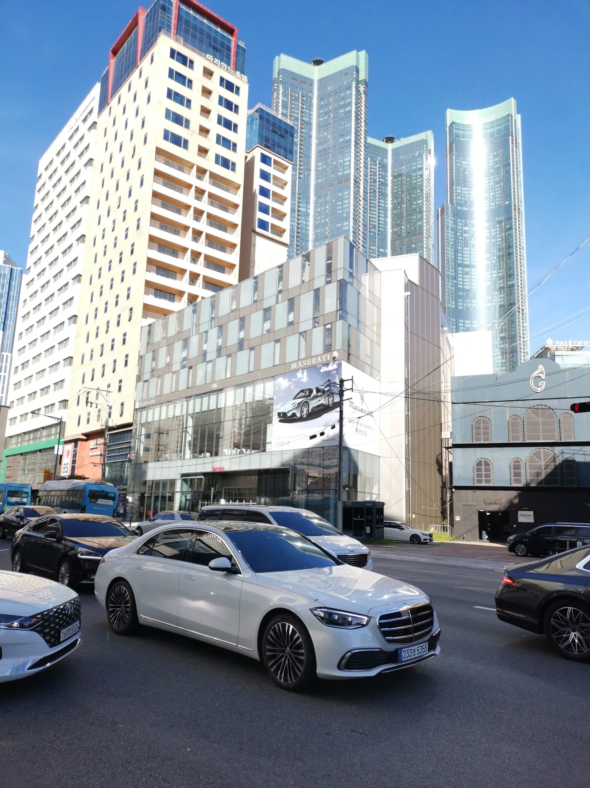
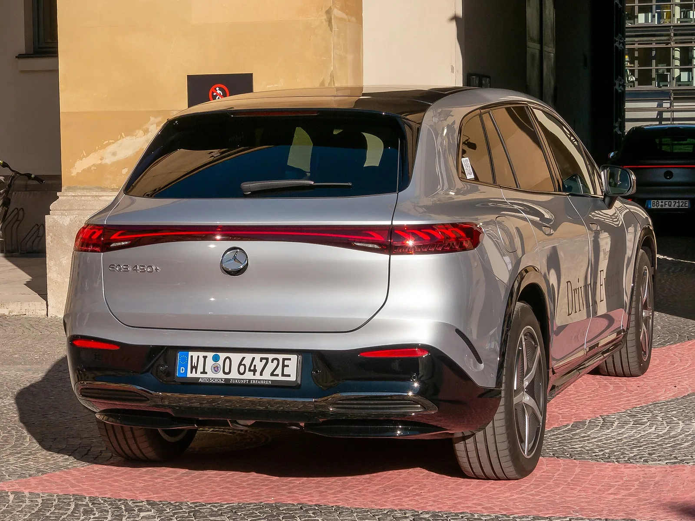

▲ 벤츠는 2년 내 도심·고속도로 주행지원에 Wayve의 AI 드라이버를 탑재할 계획이다 ⓒ Wikimedia Commons
메르세데스-벤츠가 영국의 자율주행 소프트웨어 업체 Wayve와 정식 양산 계약을 맺었다. 2026년 9월 23일(현지시간) 발표된 이번 계약에 따르면, 벤츠는 앞으로 2년 안에 Wayve의 'AI 드라이버'를 자사 양산차에 통합해 도심과 고속도로를 잇는 포인트투포인트(point-to-point) 주행보조 기능을 제공할 계획이다.
흥미로운 대목은 따로 있다. 벤츠는 이미 세계 최초로 레벨3(SAE Level 3) 자율주행 인증을 받은 '드라이브 파일럿'을 자체 개발해 보유한 회사다. 그런 벤츠가 왜 창업 8년 차 영국 스타트업의 AI에 미래 차량의 운전대를 맡기기로 했을까.
1. 무엇을 계약했나 — 2년 내 도심·고속도로 주행지원
이번 계약은 Wayve의 AI 드라이버를 벤츠 양산차에 실제로 탑재하는 '생산(production) 계약'이다. 단순한 기술 제휴나 시범 테스트 수준이 아니라, 소비자가 실제로 구매할 수 있는 차량에 들어간다는 뜻이다.
| 항목 | 내용 |
|---|---|
| 발표일 | 2026년 9월 23일 |
| 계약 범위 | 도심 도로 + 고속도로 포인트투포인트 주행지원 (AI 드라이버 통합) |
| 적용 시점 | 계약 체결 후 2년 이내 고객 인도 목표 |
| 적용 대상 | 벤츠 미래 양산차, 세계 시장 순차 확대 예정 |
| 이전 이력 | 2026년 2월 Wayve 시리즈D(12억 달러) 투자에 벤츠 참여 |
📍 벤츠 CTO의 발언
벤츠 최고기술책임자(CTO) 예르그 부르처(Jörg Burzer)는 이번 계약에 대해 "프리미엄 세그먼트에서 Wayve AI 드라이버의 첫 통합"이라며, 이를 통해 "도심·고속도로 포인트투포인트 주행지원을 세계적으로 확대하는 기초를 다지고 있다"고 밝혔다. 벤츠가 이 기술을 특정 시장의 실험이 아니라 글로벌 표준 기능으로 밀어붙이겠다는 의지가 읽히는 대목이다.
계약 발표 원문은 아래에서 확인할 수 있다. Automotive World 원문 바로가기
2. Wayve는 어떤 회사인가 — 지도 없이 배우는 AI
Wayve는 2017년 케임브리지대 연구진이 설립한 영국 자율주행 스타트업이다. 경쟁사 대부분이 HD 정밀지도와 라이다, 규칙 기반 소프트웨어를 조합하는 것과 달리, Wayve는 카메라 영상 데이터만으로 하나의 대형 신경망(트랜스포머 기반)을 학습시켜 인지·판단·제어를 한 번에 처리하는 엔드투엔드(end-to-end) AI 방식을 고수해왔다.
✅ Wayve를 이해하는 핵심 포인트
· 설립: 2017년, 영국 케임브리지 — 창업자 알렉스 켄달(Alex Kendall)
· 기술 철학: HD 정밀지도·규칙 기반 코드 없이, 카메라 데이터로 학습하는 AI 모델이 스스로 운전 판단
· 제로샷(zero-shot) 주행: 별도 재학습 없이 유럽·북미·일본 500개 이상 도시에서 주행 실증에 성공한 유일한 자율주행 업체라고 자체 소개
· 하드웨어 애그노스틱: 특정 센서 구성에 종속되지 않아 승용차부터 상용차까지 다양한 차종에 이식 가능하다는 것이 강점

▲ Wayve는 엔비디아·마이크로소프트 애저의 컴퓨팅 인프라를 활용해 대규모 AI 모델을 학습시킨다 ⓒ Wikimedia Commons
Wayve의 몸값을 키운 건 화려한 투자자 명단이다. 2026년 2월 완료된 시리즈D 투자에서 Wayve는 12억 달러(약 1조 6000억 원)를 유치하며 기업가치 86억 달러를 인정받았다. 이 라운드에는 엔비디아, 마이크로소프트, 우버가 참여했고, 완성차 업체로는 메르세데스-벤츠, 닛산, 스텔란티스가 이름을 올렸다. 주관은 이클립스(Eclipse), 발더튼(Balderton), 소프트뱅크 비전펀드2가 맡았다.
📍 우버와의 런던 로보택시 사업
Wayve는 우버와의 파트너십도 이미 실행 단계에 들어섰다. 우버와 Wayve는 2026년 9월 3일 영국 런던에서 포드 머스탱 마하-E 약 15대로 구성된 '감독형(supervised)' 로보택시 서비스를 실제로 개시했다. 다만 완전 무인은 아니고, TfL(런던교통국) 면허를 소지한 안전요원이 매 운행마다 함께 타 개입할 수 있는 구조다. 우버 CEO 다라 코스로샤히는 "전 세계 10개 이상 시장에서 함께 배치할 계획"이라고 밝혔으며, Wayve는 2027년부터 일반 소비자 차량에도 감독형 자율주행 소프트웨어를 순차 확대한다는 로드맵을 갖고 있다.
3. 벤츠의 기존 자율주행 전략 — 레벨3 인증까지 갔던 회사
벤츠는 자율주행에서 결코 후발주자가 아니다. 2021년 말 독일에서 세계 최초로 UN 국제기준(UN-R157)에 따른 SAE 레벨3 시스템 승인을 받았고, 2023년에는 미국 네바다(1월)·캘리포니아(6월)에서도 잇달아 인증을 획득한 '드라이브 파일럿(DRIVE PILOT)'을 S클래스와 EQS에 탑재해 상용화했다. 초기에는 시속 60km, 이후 95km까지 작동 속도를 끌어올리며 기술을 고도화해왔다.
| 구분 | 드라이브 파일럿(자체 개발) | Wayve AI 드라이버 |
|---|---|---|
| 인지 방식 | 라이다 + 정밀 GPS + 카메라 + 정밀지도 조합 | 카메라 중심 데이터로 학습한 단일 AI 모델, HD지도 불요 |
| 작동 조건 | 특정 고속도로 구간, 정체 상황 등 제한된 조건(ODD)에서만 작동 | 도심·고속도로를 아우르는 포인트투포인트 지향, 새 지역 확장 용이 |
| 확장성 | 신규 도로 구간마다 정밀지도 구축·검증 필요 — 확장 속도 느림 | 제로샷 주행으로 재학습 없이 신규 도시 대응 가능하다고 주장 |
| 2026년 현황 | 미국형 2026년형 S클래스에서 레벨3 확대를 보류하고 레벨2++로 전환 | 이번 계약으로 2년 내 벤츠 양산차 탑재 예정 |

▲ 레벨3 드라이브 파일럿이 처음 탑재됐던 EQS. 벤츠의 전동화 라인업에도 Wayve 기반 기능이 순차 적용될 전망이다 ⓒ Wikimedia Commons
그런데 정작 2026년, 벤츠는 레벨3 확대에 제동을 걸었다. 페이스리프트를 거친 2026년형 S클래스의 미국 시장 버전에서는 애초 예정했던 업그레이드된 레벨3 대신, 레벨2++ 수준의 운전자 보조 시스템을 적용하기로 방향을 틀었다. 배경에는 미국 규제 환경에 대한 재평가와, 높은 비용 대비 낮은 고객 채택률이 있었던 것으로 알려졌다.
📍 레벨3을 포기한 게 아니라 우회했다
벤츠가 레벨3 자체를 접은 것은 아니다. 회사는 시속 130km까지 작동 가능한 차세대 레벨3과, 아부다비에서 이미 S클래스 기반 프로토타입으로 공공도로 시험을 시작한 레벨4 로보택시 개발에 엔지니어링 자원을 재배치하고 있다고 밝혔다. 미국에서는 레벨3·4의 핵심 연산 아키텍처를 위해 엔비디아와 별도 기술 협력을 맺었고, 로보택시 배치 모델을 두고 우버와도 협업하고 있다.
4. 벤츠는 왜 자체개발 대신 Wayve를 택했나
벤츠가 이미 레벨3 인증까지 받았는데도 Wayve를 끌어들인 이유는 결국 '속도'와 '확장성'으로 요약된다. 드라이브 파일럿 같은 정밀지도·라이다 기반 시스템은 안전성 면에서 검증됐지만, 새로운 도로·국가로 확장할 때마다 정밀지도를 새로 구축하고 인증받아야 한다는 구조적 한계가 있다. 이는 곧 느린 확장 속도와 높은 유지비용으로 이어진다.
✅ 자체개발 대신 외부 파트너십을 택한 배경으로 꼽히는 이유
· 글로벌 확장 속도: Wayve의 제로샷 방식은 정밀지도 없이도 새 도시에 빠르게 적응 — 벤츠가 원하는 '세계 시장 동시 확대'에 부합
· 이미 검증된 기술: 벤츠는 시리즈D 투자 이전부터 수년간 Wayve 기술의 적합성을 자체 검증해왔다고 CTO가 직접 언급
· 비용 대비 효율: 2026년형 S클래스에서 레벨3 확대를 보류한 배경에 있던 '높은 비용 대비 낮은 채택률' 문제를, 하드웨어 애그노스틱한 Wayve 소프트웨어로 일부 해소 가능
· 자체개발 병행 전략: 벤츠는 Wayve 도입과 별개로 레벨3·4 자체 기술 개발도 계속한다 — 이중 트랙 전략에 가깝다
즉 벤츠 입장에서 이번 계약은 자체 기술을 포기하는 것이 아니라, 대중적인 양산차에 빠르게 적용할 '범용 주행지원' 트랙을 Wayve에 맡기고, 레벨3·4 완전자율주행이라는 '최상단' 트랙은 엔비디아·모멘타 등과 자체 개발을 이어가는 투트랙 구조로 읽힌다.
5. 경쟁 구도 — 테슬라 FSD, 구글 웨이모와는 무엇이 다른가
자율주행 업계는 크게 세 갈래 접근으로 나뉜다. 이번 벤츠-Wayve 조합이 그 지형에서 어디쯤 위치하는지를 보면 이번 계약의 의미가 더 뚜렷해진다.
| 구분 | 테슬라 FSD | 구글 웨이모 | 벤츠 × Wayve |
|---|---|---|---|
| 센서 | 카메라 단독('비전 온리') | 라이다 + 레이더 + 카메라 다중 센서 | 카메라 중심, 하드웨어 애그노스틱(라이다 병행 가능) |
| 지도 의존도 | 정밀지도 없이 실시간 인지에 의존 | HD 정밀지도에 크게 의존 — 지도 밖 대응은 약점 | HD 정밀지도 불필요, 제로샷 일반화 지향 |
| 아키텍처 | 엔드투엔드 신경망 단일 모델 | 모듈형 + 최근 비전 기반 엔드투엔드 모델 병행 실험 | 엔드투엔드 트랜스포머 기반 단일 모델 |
| 사업 모델 | 소비자 차량 구독형 기능(FSD) | 자체 차량대 운영하는 로보택시 서비스 | 완성차에 라이선스 공급 + 우버 로보택시 병행 |
| 확장 전략 | 차량 판매량 기반 자연 확대 | 도시별 정밀지도 구축 후 단계적 서비스 확장 | 다수 완성차 브랜드(벤츠·닛산·스텔란티스)에 동시 공급 |

▲ AI 드라이버가 실제로 작동하는 모습은 결국 이런 내비게이션·주행지원 화면으로 운전자에게 전달된다 ⓒ Wikimedia Commons
📍 웨이모도 결국 Wayve·테슬라 방식에 다가가고 있다
흥미롭게도 정밀지도 의존도가 가장 높았던 웨이모조차 최근 비전 기반 엔드투엔드 모델 실험을 병행하고 있다는 보도가 나온다. 업계 전체가 'HD지도 + 규칙 기반'에서 '대규모 데이터로 학습한 단일 AI 모델' 쪽으로 무게중심을 옮기고 있다는 신호로 해석된다. 다만 정전 등 인프라 장애 상황에서는 지도 의존형 시스템이 오작동하거나 멈추는 사례가 보고된 반면, 카메라·AI 중심 시스템은 상대적으로 유연하게 대응했다는 비교 사례도 있다.
6. 앞으로 관전 포인트 — 언제, 어떤 차에 탑재되나
가장 궁금한 건 '언제, 어떤 차부터' 적용되느냐다. 이번 발표에서는 구체적인 차종이나 국가별 출시 순서는 공개되지 않았다. 다만 CTO가 언급한 "프리미엄 세그먼트에서의 첫 통합"이라는 표현을 보면, S클래스·EQS 등 플래그십 라인업이 우선순위에 있을 가능성이 크다.
✅ 앞으로 확인해야 할 것들
· 탑재 차종·국가: 2년 내 목표라고 밝혔지만 구체적 차종과 출시 시장은 미공개
· 가격 정책: 드라이브 파일럿처럼 고가 옵션일지, 대중화된 표준 기능일지
· 레벨3·4 로드맵과의 관계: Wayve 기반 기능이 향후 벤츠의 레벨3·4 자체 개발과 어떻게 통합·분리될지
· 다른 완성차와의 관계: Wayve는 닛산·스텔란티스와도 협력 중 — 벤츠만의 차별화 요소가 무엇일지
· 규제 대응: 유럽·미국·한국 등 각 지역 자율주행 규제 인증을 어떻게 통과할지
Wayve의 시리즈D 투자 및 기술 로드맵 관련 공식 발표는 아래에서 확인할 수 있다. Wayve 공식 발표 바로가기
7. 요약
메르세데스-벤츠는 영국 스타트업 Wayve와 양산 계약을 맺고, 2년 내 도심·고속도로 포인트투포인트 주행보조를 자사 양산차에 탑재하기로 했다. 벤츠는 이미 세계 최초로 레벨3 인증을 받은 드라이브 파일럿을 보유한 회사지만, 정밀지도 기반 시스템의 느린 확장 속도와 높은 비용 문제 앞에서 지도 없이 학습하는 Wayve의 엔드투엔드 AI를 대중적 확산의 지렛대로 택했다.
Wayve는 엔비디아·마이크로소프트·우버 등이 투자한 기업가치 86억 달러의 회사로, 우버와 함께 런던 로보택시 사업도 준비 중이다. 벤츠는 이번 계약을 통해 대중적 양산차용 주행지원은 Wayve에, 레벨3·4 완전자율주행은 자체·엔비디아·모멘타와의 협업으로 가져가는 투트랙 전략을 구체화한 것으로 풀이된다.
테슬라의 카메라 단독 FSD, 구글 웨이모의 정밀지도 기반 로보택시 사이에서, 벤츠-Wayve 조합은 하드웨어에 얽매이지 않는 제3의 노선을 시도하는 셈이다. 실제 탑재 차종과 시장별 출시 시점이 공개될 다음 단계가 이번 계약의 성패를 가늠할 분기점이 될 전망이다.